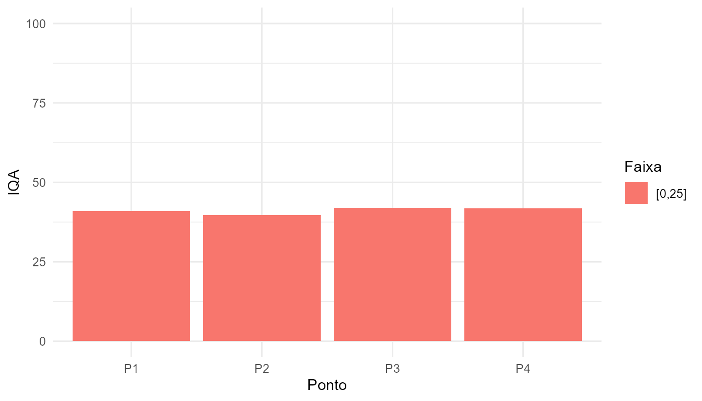

Load package and demo dataset
library(tikatuwq)
# Try to make wq_demo available even when the package
# cannot be temporarily reinstalled during pkgdown build.
ok <- FALSE
try({
utils::data("wq_demo", package = "tikatuwq", envir = environment())
ok <- exists("wq_demo", inherits = FALSE)
}, silent = TRUE)
if (!ok) {
# Fallback: read example CSV shipped with the package
csv <- system.file("extdata", "exemplo_chamagunga.csv", package = "tikatuwq")
if (nzchar(csv)) {
wq_demo <- read_wq(csv)
ok <- TRUE
}
}
if (!ok) {
# Last resort: small synthetic dataset (schema-compatible)
set.seed(1)
wq_demo <- data.frame(
data = as.Date("2025-01-01") + 0:9,
rio = "Demo",
ponto = paste0("P", seq_len(10)),
turbidez = runif(10, 1, 50),
od = runif(10, 5, 9),
pH = runif(10, 6.5, 8.5),
temperatura = runif(10, 20, 28),
condutividade = runif(10, 50, 300),
stringsAsFactors = FALSE
)
}
# Coerce common numeric columns defensively (some example files may carry strings)
num_candidates <- c(
"turbidez","od","pH","temperatura","condutividade",
"dbo","dbo5","nitrato","fosforo","amonia",
"coliformes","coliformes_totais","coliformes_termotolerantes"
)
for (nm in intersect(num_candidates, names(wq_demo))) {
suppressWarnings({ wq_demo[[nm]] <- as.numeric(wq_demo[[nm]]) })
}
head(wq_demo)
#> # A tibble: 6 × 14
#> rio ponto data ph od turbidez dbo coliformes p_total nt_total
#> <chr> <chr> <date> <dbl> <dbl> <dbl> <dbl> <dbl> <dbl> <dbl>
#> 1 BURAN… FBS-… 2020-03-03 6.52 6.03 63.5 3 7.9 0.02 1
#> 2 BURAN… FBS-… 2022-03-10 6.97 6.52 18.3 3 9.2 0.04 1
#> 3 BURAN… FBS-… 2023-05-24 8.19 6.13 9 4 7.9 0.02 1
#> 4 BURAN… FBS-… 2024-02-20 7.55 5.96 112 3 1.7 0.08 1.9
#> 5 BURAN… FBS-… 2024-09-04 7.8 7.58 5.8 3 2.3 0.02 1
#> 6 BURAN… FBS-… 2020-03-04 6.39 6.7 11.4 7 1.3 0.03 1
#> # ℹ 4 more variables: temperatura <dbl>, tds <dbl>, lat <dbl>, lon <dbl>Compute IQA and check CONAMA compliance
ok_iqa <- TRUE
df <- tryCatch({
wq_demo |>
validate_wq() |>
iqa(na_rm = TRUE)
}, error = function(e) {
ok_iqa <<- FALSE
message("iqa() failed in vignette build: ", conditionMessage(e))
wq_demo |>
validate_wq()
})
conf <- tryCatch({
conama_check(df, classe = "2")
}, error = function(e) {
message("conama_check() failed in vignette build: ", conditionMessage(e))
NULL
})
if (!is.null(conf)) head(conf)
#> # A tibble: 6 × 46
#> rio ponto data ph od turbidez dbo coliformes p_total nt_total
#> <chr> <chr> <date> <dbl> <dbl> <dbl> <dbl> <dbl> <dbl> <dbl>
#> 1 BURAN… FBS-… 2020-03-03 6.52 6.03 63.5 3 7.9 0.02 1
#> 2 BURAN… FBS-… 2022-03-10 6.97 6.52 18.3 3 9.2 0.04 1
#> 3 BURAN… FBS-… 2023-05-24 8.19 6.13 9 4 7.9 0.02 1
#> 4 BURAN… FBS-… 2024-02-20 7.55 5.96 112 3 1.7 0.08 1.9
#> 5 BURAN… FBS-… 2024-09-04 7.8 7.58 5.8 3 2.3 0.02 1
#> 6 BURAN… FBS-… 2020-03-04 6.39 6.7 11.4 7 1.3 0.03 1
#> # ℹ 36 more variables: temperatura <dbl>, tds <dbl>, lat <dbl>, lon <dbl>,
#> # IQA <dbl>, IQA_status <ord>, ph_ok <lgl>, ph_status <chr>,
#> # ph__lim_min <dbl>, ph__lim_max <dbl>, ph__delta <dbl>, od_ok <lgl>,
#> # od_status <chr>, od__lim_min <dbl>, od__lim_max <dbl>, od__delta <dbl>,
#> # turbidez_ok <lgl>, turbidez_status <chr>, turbidez__lim_min <dbl>,
#> # turbidez__lim_max <dbl>, turbidez__delta <dbl>, dbo_ok <lgl>,
#> # dbo_status <chr>, dbo__lim_min <dbl>, dbo__lim_max <dbl>, …Summaries and plots

IQA por ponto para o dataset de demonstração.
conf_long <- tryCatch(conama_summary(df, classe = "2"), error = function(e) NULL)
if (!is.null(conf_long)) head(conf_long)
#> # A tibble: 6 × 7
#> parametro valor lim_min lim_max status ok delta
#> <chr> <dbl> <dbl> <dbl> <chr> <lgl> <dbl>
#> 1 ph 6.52 6 9 ok TRUE 0
#> 2 ph 6.97 6 9 ok TRUE 0
#> 3 ph 8.19 6 9 ok TRUE 0
#> 4 ph 7.55 6 9 ok TRUE 0
#> 5 ph 7.8 6 9 ok TRUE 0
#> 6 ph 6.39 6 9 ok TRUE 0Render a report (writes to a temporary directory)
# Avoid running nested rendering during vignette build on CRAN
out_file <- render_report(df)
out_fileInteractive maps (plot_map)
if (eval_interactive) {
# Minimal example dataset with coordinates
df_map <- data.frame(
rio = c("Buranhem","Chamagunga"),
ponto = c("P1","P2"),
data = as.Date(c("2025-09-20","2025-09-21")),
latitude = c(-16.435, -16.498),
longitude = c(-39.062, -39.080),
iqa = c(72, 58)
)
plot_map(
df_map,
popup_cols = c("rio","ponto","data","iqa"),
color_by = "iqa"
)
}